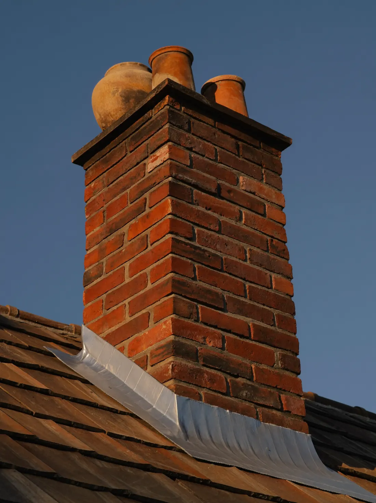
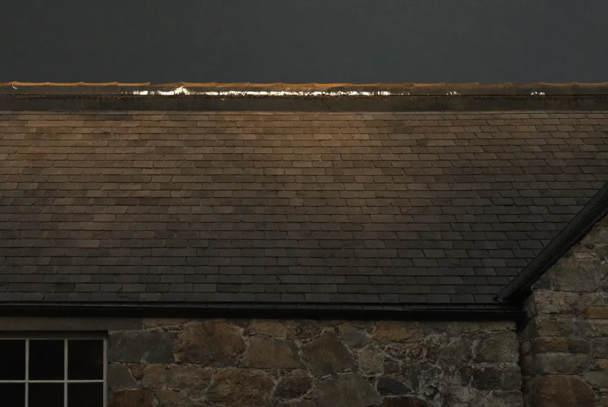
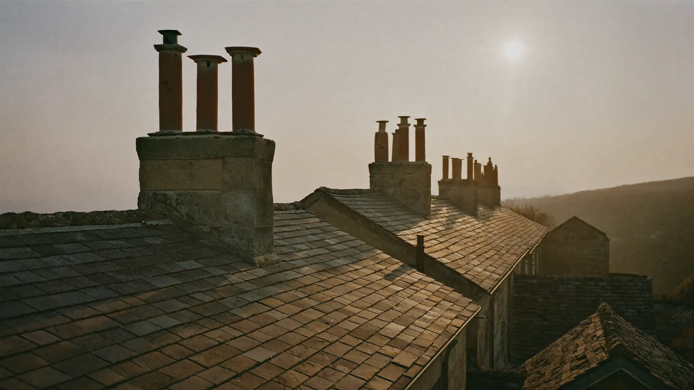
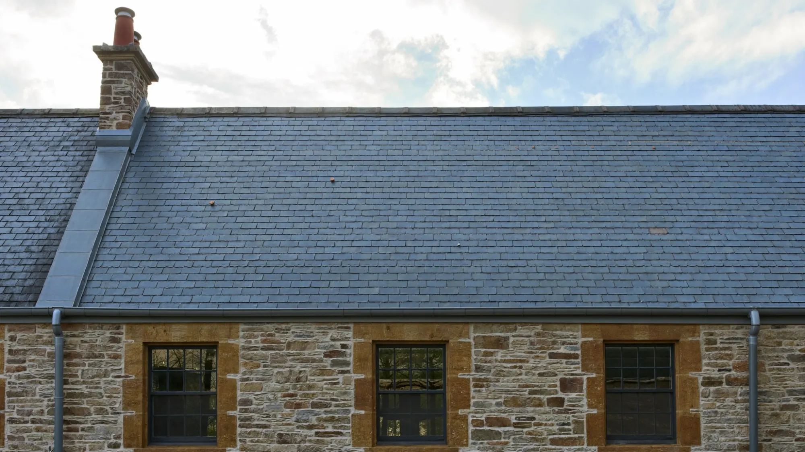
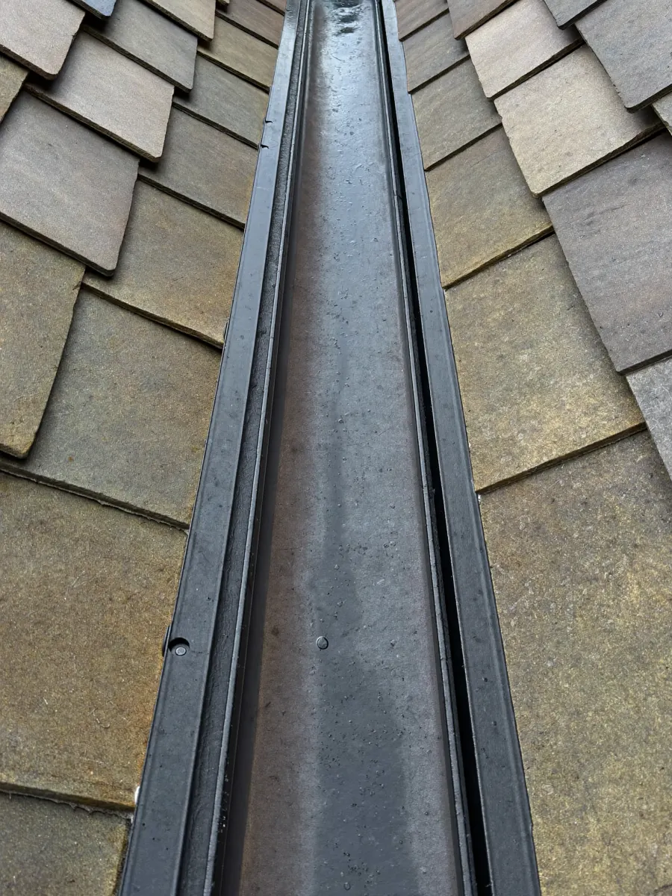
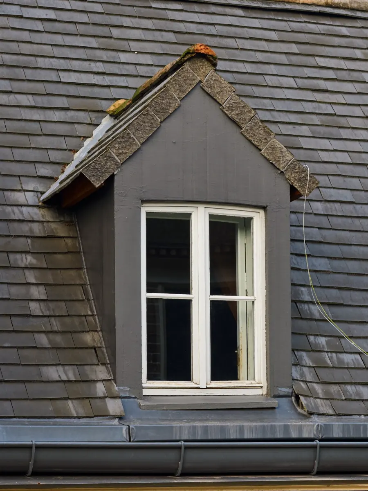
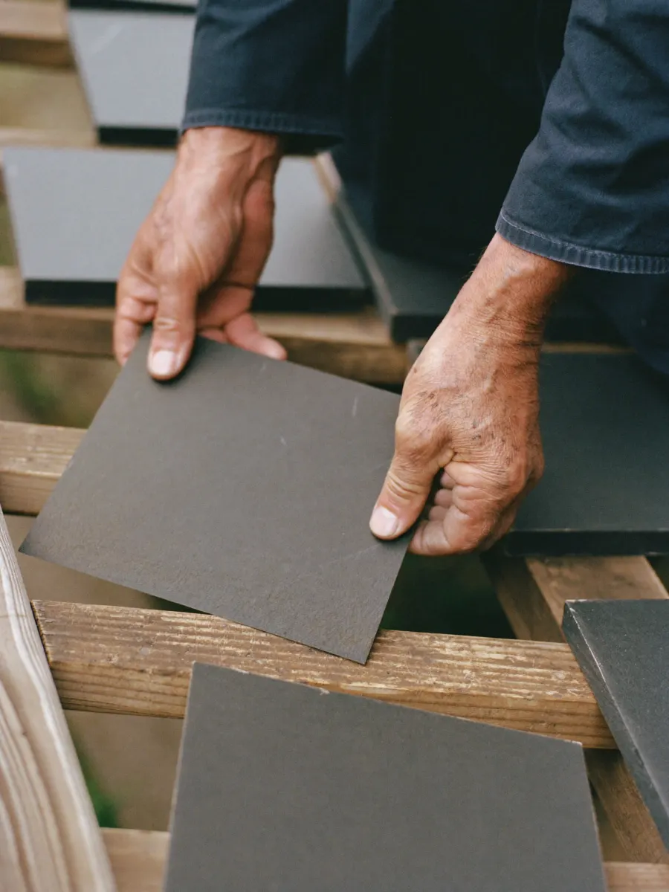

Slaters & leadworkers
Laid byhand.Built tooutlast us.
01 / The trade
A slate roof is a hundred small decisions made in the rain. Which slate goes where, how much head-lap, where the lead turns. We make every one of them by hand, so the roof still sheds water long after the scaffold has gone.
Laid from the eaves up
01/ 12 courses
Double eaves course first. Nothing gets past the bottom edge.
02 / What we do
Six jobs.
Done one way.
-
 01
01Natural slate roofs
Full strips and re-roofs in new or reclaimed slate, sorted by thickness, holed on site and fixed with copper nails or hooks.
-
 02
02Leadwork
Flashings, soakers, valleys and bays, bossed and dressed from the roll. No bitumen tape, no silicone shortcuts.
-

03Chimneys
Repointing, rebuilding above the roofline, new flaunching and pots, and taking redundant stacks down safely.
-
04
Repairs & storm damage
Slipped slates, cracked ridges and leaks traced to the actual source, then fixed so they stay fixed.
-

05Gutters, fascias & eaves
Cast iron and aluminium rainwater goods, timber fascias and ventilated eaves that let the roof breathe.
-
06
Heritage & listed roofs
Matching old slate sizes and diminishing courses, working to conservation requirements and keeping what can be saved.

Wet slate.
Dry loft.
03 / One roof, start to finish
Drag the line.
The same roof, the same camera. Stripped to the rafters, new breathable membrane and battens, the sound slate reused and the rest matched from reclaim.


04 / How a job runs
- I.
Survey
We go up, not just look up. Photos of everything we find, sent to you the same week.
- II.
Written quote
Line by line: materials, scaffold, lead, skips. What we will do and what we will not.
- III.
The work
Roof sheeted every night, site swept every evening. One foreman from start to finish.
- IV.
Handover
A photo record of every stage under the slate, and a written guarantee on workmanship.
From the roofs this season



05 / Enquire
Leak, slipped slate, or the whole roof.
Tell us what is happening and we will come and look. Emergency weatherproofing the same day where we can.
Call the yard01632 960418